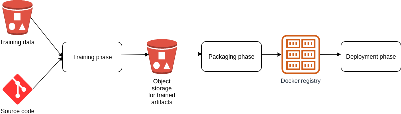

Concepts¶
Phases¶
Odahu splits the ML/AI model lifecycle into three phases:
Applications and tools can further automate each phase by implementing pluggable extensions as
Trainers and Packagers can be registered as components of the Odahu Platform using:
When registered, these components can use Odahu Trainer Metrics and Trainer Tags.
Users are encouraged to integrate third-party Trainer Extensions and Packager Extensions.
Toolchains¶
Taken together a Trainer, Packager, and Deployer comprise a Toolchain that automates an end-to-end machine learning pipeline.
Ready to use¶
Odahu provides a Trainer Extension and a Packager Extension
These power the default Toolchain.
Model storage¶
Odahu Platform stores models in Trained Model Binaries for different languages.
Presently, Odahu Platform supports only:
Users are encouraged to provide additional formats.